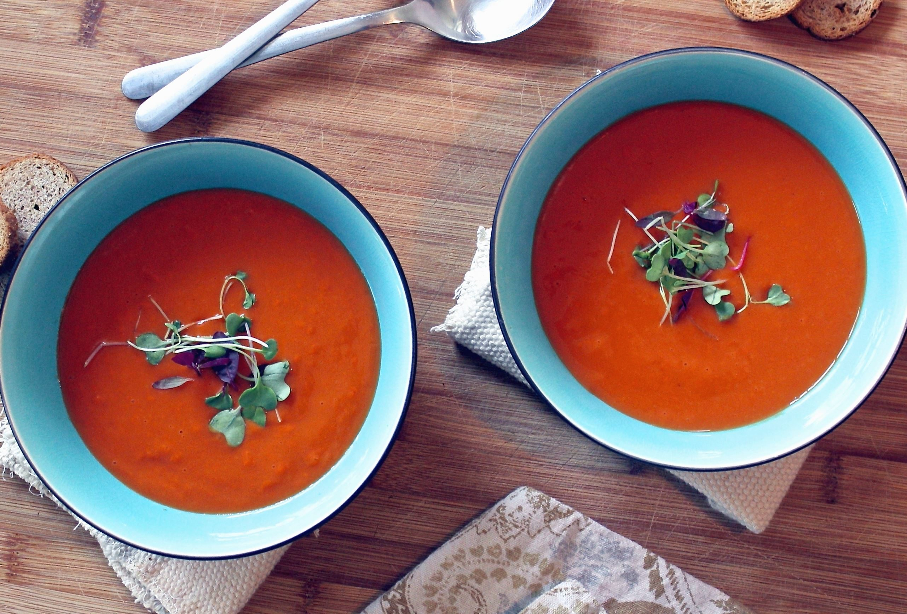

Täältä löydät kasvisruokien reseptit.
KASVISSOSEKEITTO
AINEKSET:
700 g kasviksia (esim. bataattia, porkkanaa, perunaa)
1 sipuli
1 valkosipulinkynsi
1l vettä
1-2 dl ruokakermaa
mausteita (suolaa, pippuria, basilikaa)
VALMISTUS:
Pese ja kuori kasvikset. Pilko ne paloiksi. Kuori ja pilko myös sipuli ja valkosipuli.
Lisää kaikki ainekset kattilaan, lisää vesi ja mausteet ja kuumenna kiehuvaksi. Keitä niin kauan, että kasvikset ovat pehmeitä.
Soseuta sauvasekottimella. Lisää ruokakermaa sen verran, että saat haluamasi koostumuksen.
